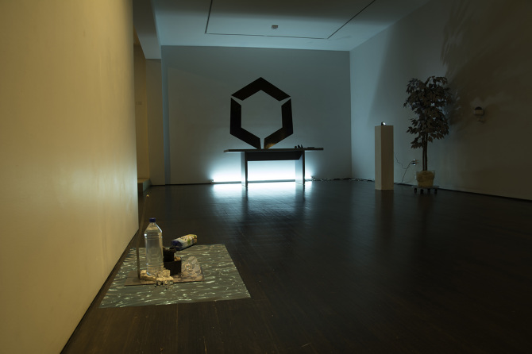
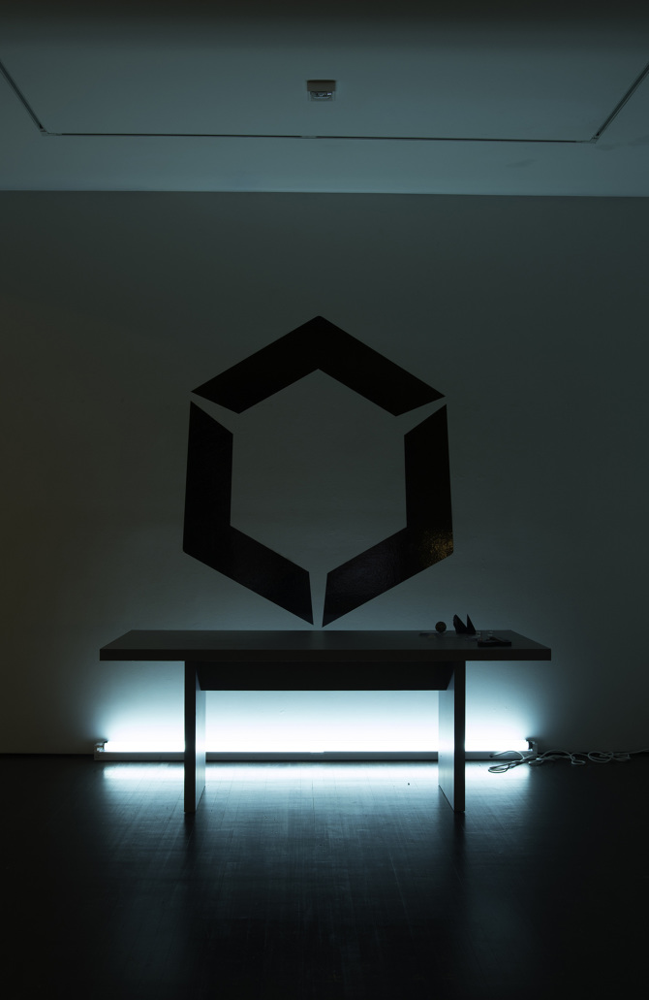
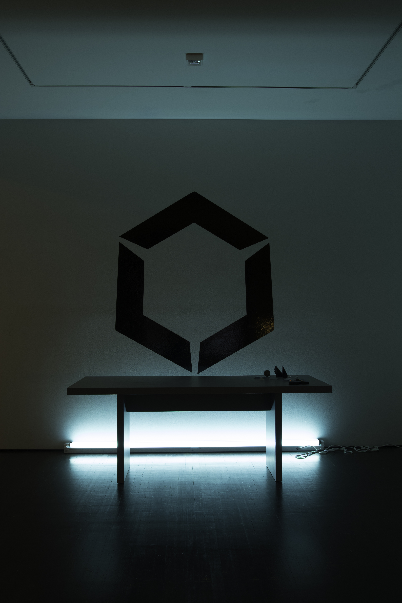
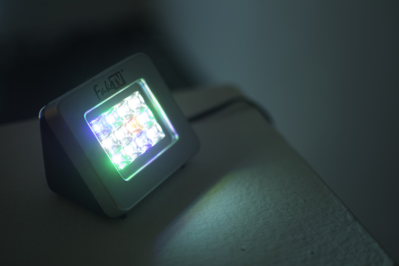
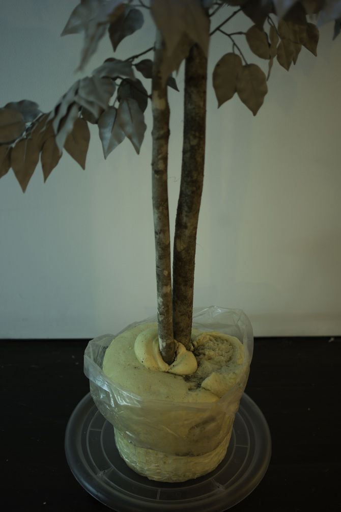
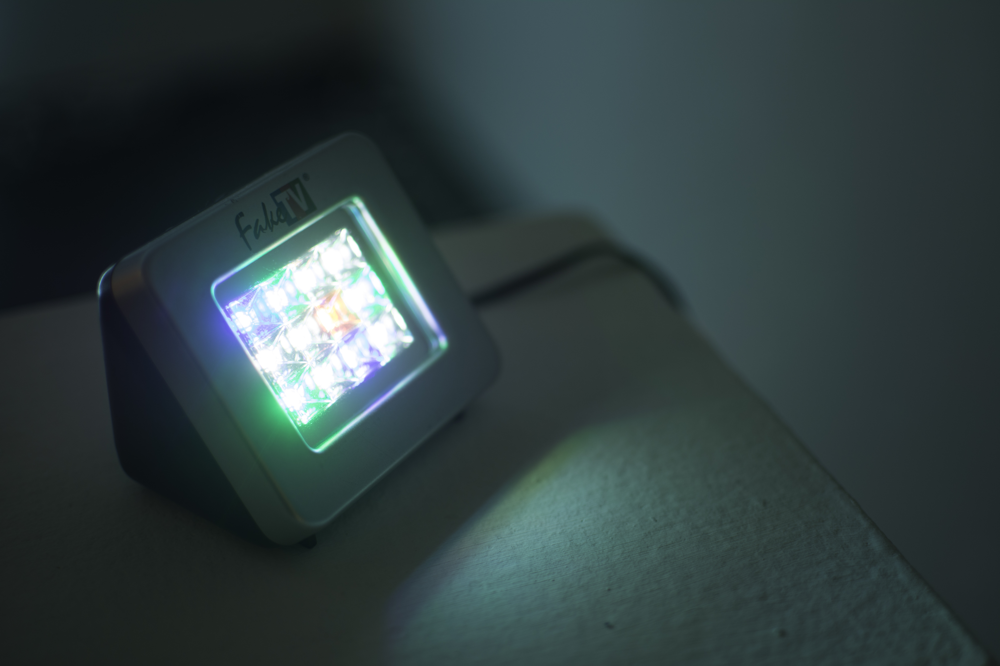
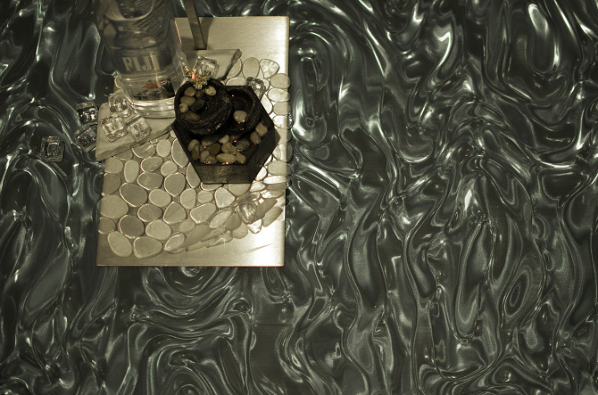

Dynamic Horizons Ltd: Deliverables
Dynamic Horizons Ltd: Deliverables is an installation of various authentic and imitation goods including: fake iPads, fake TV burglar deterrent lamp, fake surveillance camera, plastic prop ice cubes, 8bit foam pistol, fake ficus, real spathiphyllum plant, real Fiji brand water, Invisalign dental appliance, Ikea furnishings, fluorescent light, Voss brand water bottle filled with powdered aluminum, and a desktop fountain filled with Vita Coco brand coconut water. 2014







Metadata: (This transmission contains the 5 oblations: Low cost contemporary Swedish furnishings, a still living plant, branded commodity readymade, esoteric science/occult text, screen grabs. Full respect intended, all obeisances made.) Any sufficiently advanced technology is indistinguishable from magic. But how can we recognize magic when we see it? The same way we recognize anything else: by its affects. Technology has formulas. Art has formulas. At the fringes they all become occult. The corporation is a compound entity comprised of the various hungers and lusts of its stakeholders. It is a chimera of capital optimized for commerce. To maintain its edge the corporation must exploit the obscure, the long tail. AT&T, A∴A∴, ABC, O.T.O., OOO. We know the corporation by their brand. Their logo the sigil by which we invoke them. The Free Market and Do What Thou Wilt Shall Be The Whole of The Law We cannot compete. Our hand is forced. We must ourselves become chimeras, corporate composites. (Photos courtesy of Bertrand Morin)